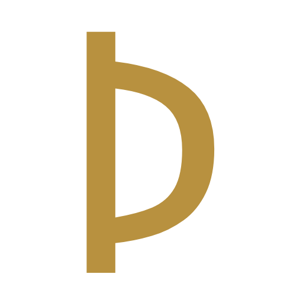
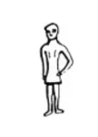

Rune Grimoire
Thurisaz
Modern Relevance
Thurisaz refers to Thor and giants, representing a gateway or obstacle. It marks the stillness before action or progress. This rune advises patience, signaling that significant change or opportunity approaches.
Tree, Element, and Deity
Tree: oak
Element: fire
Meaning: a giant; attack and defense
Names Across Dialects
| Dialect | Word | Meaning |
|---|---|---|
| Proto-Germanic | thurisaz | The strong one, giant |
| Gothic | thiuth | The good one |
| Old English | thorn | Thorn |
| Old Norse | thurs | Giant |
| Icelandic | Þurs | Giant |
| Norwegian | Thurs | Giant |
Phonetic value: voiceless th (as in "thorn")
Esoteric interpretation: Asa-Tharr, the enemy of unfriendly forces
Ideographic interpretation: the hammer, or the thorn on a branch
Cosmological Lore
Thurisaz is the directed cosmic force of destruction and defense. It is the archetypal instinctual will, operating without self-consciousness. This rune is a symbol of lightning and thunder and is equated with Mjollnir, the hammer of Thor.
Mjollnir is the destroyer of the etins (giants) and the protector of Midgard and Asgard. Thor is in many ways similar to the thursar (giants) in size and brute strength, making the Thunderer an ideal counterforce against them. The Æsir constantly strive to maintain their enclosures in the multiverse, and the power of this rune is invaluable in that effort.
The force expressed through Thurisaz is a forward-thrusting destruction of powers hostile to cosmic order. These hostile powers are not morally "evil" in a dualistic sense; they are simply detrimental to the established and instinctual life urge exemplified by the Æsir and Vanir and expressed through humanity. Just as the thorn protects the rose, Mjollnir protects Midgard and Asgard.
The Container of Polarities
The TH-rune is the container of the life-death polarity. It holds the ultimate power to assimilate potential energy from two extremes into a pattern of action. Thurisaz is a projectable form of applied power that can serve as a limiter and director of various energy-form binary pairs found throughout the rune row. Any essentially energetic rune may be combined with any paradigmatic rune through the TH-rune force and directed toward a specific purpose.
Regeneration and Awakening
Thurisaz is also a rune of regeneration and fertilization. As lightning heralds the crop-bringing rains, the TH-rune breaks down barriers and fecundates so that new beginnings may be made. The thorn is the thorn of awakening that dispels the power of the svefnthorn (the sleep-thorn). This is the cosmic generative power.
Rune Character
Rune of cutting, sharpness, and pain. Brute strength, the destructive power of chaos and ruin. Also of death and regeneration, transformation and breaking down barriers. The power of this rune is wild, and a strong mind and will are needed to direct it. Thurisaz assists the energy of other runes it is used with to manifest in reality. Like a lightning bolt, Thorr brings on the energies of the berserker — energies this wild should only be used in war or attack. Can raise and guide thunderstorms and direct lightning.
In many German fairy tales such as Sleeping Beauty, the prick of a thorn, pin, or spindle casts a spell upon the victim.
Crystal Pairings
- Bloodstone has been used with this rune in the raising of thunderstorms
- Hematite used with this rune can shield against electromagnetic energies and is therefore helpful in deflecting curses
- A pointed crystal used with this rune focuses energies and projects them
Keywords
- Force of destruction and defense
- Action
- Applied power
- Direction of polarities
- Regeneration (following destruction)
Galdr
thurisaz thurisaz thurisaz
thur thar thir ther thor
thu tha thi the tho
Stadha
Stand upright with the left arm bent at the elbow, hand on hip, palm grasping the hip bone. Face east or south.

Magickal Workings
- Active defense
- Destruction of enemies and curses
- Awakening of the will to action
- Preparedness for generation in all realms
- Love magick
- Knowledge of the division and unity of all things
Constructive Applications
Rune of healing. Enhances wisdom, courage, physical strength, independence, and leadership.
Baneful Applications
Brings destruction and confusion. Thorr is used in the destruction of enemies and in curses. Used to control another or render the individual defenseless.
Stadhagaldr Rites
Increase in Magickal Power
Thurisaz directs the rune-streams outward from the vitki with focused intent:
Rune-streams meet in me and beam
whither I send them,
with full knowledge.
See Stadhagaldr (Posture Magick) for the full rite.
Success and Victory
Thurisaz drives the vitki's deeds to grow in might (appears twice in this rite):
My deeds make me grow, forever in might and main.
Our deeds make us grow, forever in might and main.
See Stadhagaldr (Posture Magick) for the full rite.
Increase in Creative Force
Thurisaz directs the rune-streams and empowers the spoken word:
Rune-streams meet in me and beam whither I send them.
The might of my word waxes.
See Stadhagaldr (Posture Magick) for the full rite.